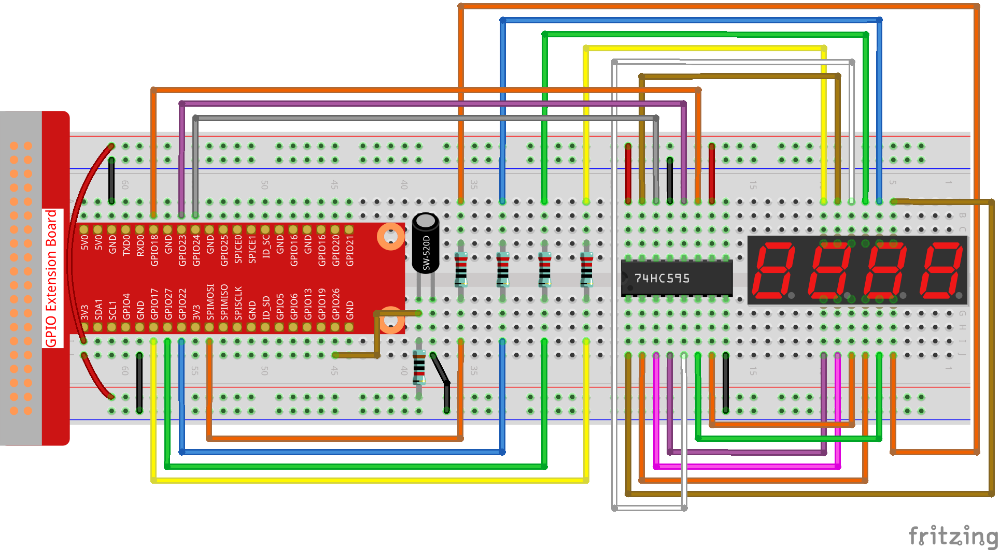

注釈
こんにちは、SunFounderのRaspberry Pi & Arduino & ESP32愛好家コミュニティへようこそ！Facebook上でRaspberry Pi、Arduino、ESP32についてもっと深く掘り下げ、他の愛好家と交流しましょう。
参加する理由は？
エキスパートサポート：コミュニティやチームの助けを借りて、販売後の問題や技術的な課題を解決します。
学び＆共有：ヒントやチュートリアルを交換してスキルを向上させましょう。
独占的なプレビュー：新製品の発表や先行プレビューに早期アクセスしましょう。
特別割引：最新製品の独占割引をお楽しみください。
祭りのプロモーションとギフト：ギフトや祝日のプロモーションに参加しましょう。
👉 私たちと一緒に探索し、創造する準備はできていますか？[ここ]をクリックして今すぐ参加しましょう！
3.1.13 ゲーム– 10秒
前書き
それから、あなたの集中力に挑戦できるゲームデバイスを作ろう。傾斜スイッチをスティックにつないで、魔法の棒を作る。棒を振ると、4桁のセグメントディスプレイがカウントを開始し、もう一度振るとカウントを停止する。表示されたカウントを10.00に保つことに成功した場合、あなたが勝つ。友達とゲームをプレイして、タイムウィザードが誰かを確認できる。
部品

回路図
T-Board Name |
physical |
wiringPi |
BCM |
GPIO17 |
Pin 11 |
0 |
17 |
GPIO27 |
Pin 13 |
2 |
27 |
GPIO22 |
Pin 15 |
3 |
22 |
SPIMOSI |
Pin 19 |
12 |
10 |
GPIO18 |
Pin 12 |
1 |
18 |
GPIO23 |
Pin 16 |
4 |
23 |
GPIO24 |
Pin 18 |
5 |
24 |
GPIO26 |
Pin 37 |
25 |
26 |

実験手順
ステップ1： 回路を作る。
{kind=link}
C言語ユーザー向け
ステップ2： コードのフォルダーに入る。
cd ~/davinci-kit-for-raspberry-pi/c/3.1.13/
ステップ3： コードをコンパイルする。
gcc 3.1.13_GAME_10Second.c -lwiringPi
ステップ4： EXEファイルを実行する。
sudo ./a.out
棒を振ると、4桁のセグメントディスプレイがカウントを開始し、もう一度振るとカウントを停止する。 表示されたカウントを 10.00 に保つことに成功した場合、あなたが勝つ。 もう一度振って、ゲームの次のラウンドを開始する。
コードの説明
void stateChange(){
if (gameState == 0){
counter = 0;
delay(1000);
ualarm(10000,10000);
}else{
alarm(0);
delay(1000);
}
gameState = (gameState + 1)%2;
}
ゲームは二つのモードに分けられている：
gameState = 0 は「開始」モードであり、このモードでは、時間を計測してセグメントディスプレイに表示し、傾斜スイッチを振って「表示」モードに入る。
GameState = 1 は「表示」モードであり、タイミングを停止し、セグメントディスプレイに時間を表示する。傾斜スイッチを再度振ると、タイマーがリセットされ、ゲームが再起動する。
void loop(){
int currentState =0;
int lastState=0;
while(1){
display();
currentState=digitalRead(sensorPin);
if((currentState==0)&&(lastState==1)){
stateChange();
}
lastState=currentState;
}
}
Loop() が主な関数である。最初に、4ビットセグメントディスプレイに時間が表示され、
傾斜スイッチの値が読み取られる。傾斜スイッチの状態が変更された場合、 stateChange() が呼び出される。
Python言語ユーザー向け
ステップ2： コードのフォルダーに入る。
cd ~/davinci-kit-for-raspberry-pi/python/
ステップ3： EXEファイルを実行する。
sudo python3 3.1.13_GAME_10Second.py
棒を振ると、4桁のセグメントディスプレイがカウントを開始し、 もう一度振るとカウントを停止する。表示されたカウントを 10.00 に保つことに成功した場合、あなたが勝つ。 もう一度振って、ゲームの次のラウンドを開始する。
コード
注釈
以下のコードを 変更/リセット/コピー/実行/停止 できます。 ただし、その前に、 davinci-kit-for-raspberry-pi/python のようなソースコードパスに移動する必要があります。
import RPi.GPIO as GPIO
import time
import threading
sensorPin = 26
SDI = 24
RCLK = 23
SRCLK = 18
placePin = (10, 22, 27, 17)
number = (0xc0, 0xf9, 0xa4, 0xb0, 0x99, 0x92, 0x82, 0xf8, 0x80, 0x90)
counter = 0
timer =0
gameState =0
def clearDisplay():
for i in range(8):
GPIO.output(SDI, 1)
GPIO.output(SRCLK, GPIO.HIGH)
GPIO.output(SRCLK, GPIO.LOW)
GPIO.output(RCLK, GPIO.HIGH)
GPIO.output(RCLK, GPIO.LOW)
def hc595_shift(data):
for i in range(8):
GPIO.output(SDI, 0x80 & (data << i))
GPIO.output(SRCLK, GPIO.HIGH)
GPIO.output(SRCLK, GPIO.LOW)
GPIO.output(RCLK, GPIO.HIGH)
GPIO.output(RCLK, GPIO.LOW)
def pickDigit(digit):
for i in placePin:
GPIO.output(i,GPIO.LOW)
GPIO.output(placePin[digit], GPIO.HIGH)
def display():
global counter
clearDisplay()
pickDigit(0)
hc595_shift(number[counter % 10])
clearDisplay()
pickDigit(1)
hc595_shift(number[counter % 100//10])
clearDisplay()
pickDigit(2)
hc595_shift(number[counter % 1000//100]-0x80)
clearDisplay()
pickDigit(3)
hc595_shift(number[counter % 10000//1000])
def stateChange():
global gameState
global counter
global timer1
if gameState == 0:
counter = 0
time.sleep(1)
timer()
elif gameState ==1:
timer1.cancel()
time.sleep(1)
gameState = (gameState+1)%2
def loop():
global counter
currentState = 0
lastState = 0
while True:
display()
currentState=GPIO.input(sensorPin)
if (currentState == 0) and (lastState == 1):
stateChange()
lastState=currentState
def timer():
global counter
global timer1
timer1 = threading.Timer(0.01, timer)
timer1.start()
counter += 1
def setup():
GPIO.setmode(GPIO.BCM)
GPIO.setup(SDI, GPIO.OUT)
GPIO.setup(RCLK, GPIO.OUT)
GPIO.setup(SRCLK, GPIO.OUT)
for i in placePin:
GPIO.setup(i, GPIO.OUT)
GPIO.setup(sensorPin, GPIO.IN)
def destroy(): # When \"Ctrl+C\" is pressed, the function is executed.
GPIO.cleanup()
global timer1
timer1.cancel()
if __name__ == '__main__': # Program starting from here
setup()
try:
loop()
except KeyboardInterrupt:
destroy()
コードの説明
def stateChange():
global gameState
global counter
global timer1
if gameState == 0:
counter = 0
time.sleep(1)
timer()
elif gameState ==1:
timer1.cancel()
time.sleep(1)
gameState = (gameState+1)%2
ゲームは二つのモードに分けられている：
gameState = 0 は「開始」モードであり、このモードでは、時間を計測してセグメントディスプレイに表示し、傾斜スイッチを振って「表示」モードに入る。
GameState = 1 は「表示」モードであり、タイミングを停止し、セグメントディスプレイに時間を表示する。傾斜スイッチを再度振ると、タイマーがリセットされ、ゲームが再起動する。
def loop():
global counter
currentState = 0
lastState = 0
while True:
display()
currentState=GPIO.input(sensorPin)
if (currentState == 0) and (lastState == 1):
stateChange()
lastState=currentState
loop() が主な関数である。最初に、4ビットセグメントディスプレイに時間が表示され、
傾斜スイッチの値が読み取られる。
傾斜スイッチの状態が変更された場合、 stateChange() が呼び出される。
def timer():
global counter
global timer1
timer1 = threading.Timer(0.01, timer)
timer1.start()
counter += 1
間隔が0.01秒に達すると、Timer関数が呼び出される。カウンターに1を追加すると、タイマーが再び使用されて、0.01秒ごとに繰り返し実行される。